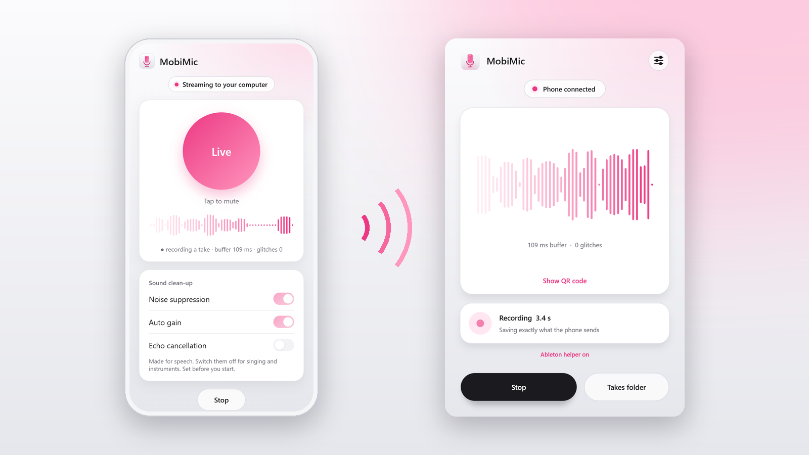
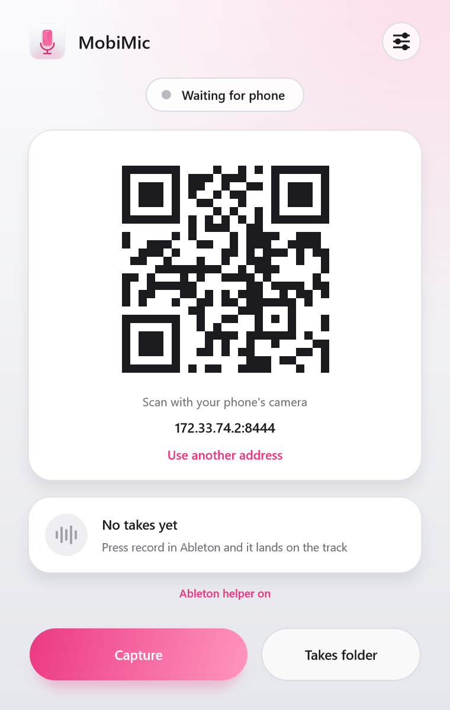
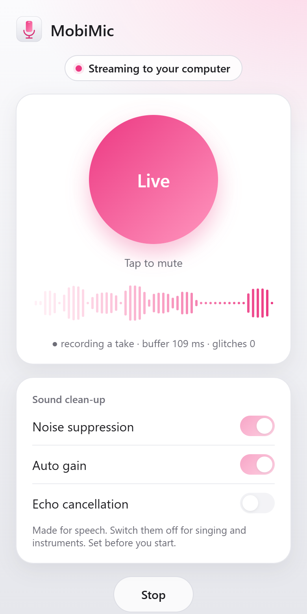
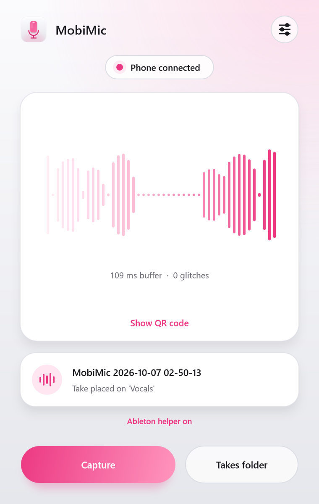
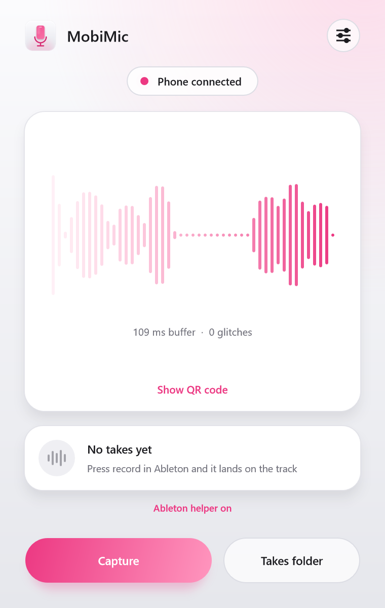
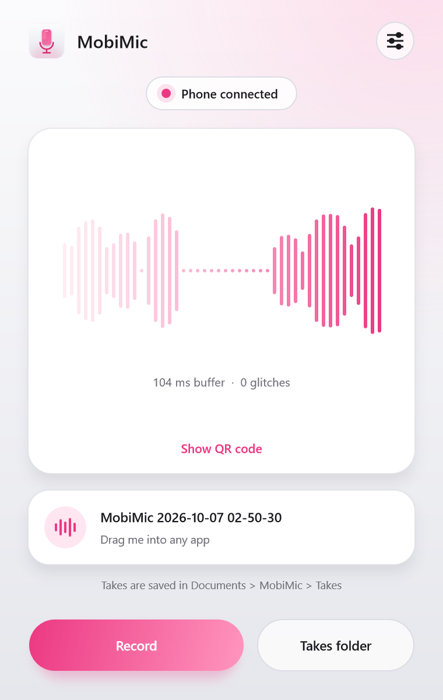

MobiMic sends your phone's mic straight into your DAW over Wi-Fi. Add the plugin to a track, scan a QR code, and press record.
VST3 plugin and standalone app · Windows 10 and 11 · Nothing to install on the phone

No cable, no interface, no driver. Just the phone in your pocket and the Wi-Fi you already have.
The phone side runs in its browser. Scan the QR code in the plugin window and tap Start.
Every recording is saved exactly as the phone sent it. A Wi-Fi hiccup you heard live is not in the take.
In Ableton Live the take lands on the track as a clip, right where you started recording.
Works on your home network, on the phone's own hotspot, or over USB tethering when there is no Wi-Fi.
Audio travels encrypted, directly from phone to computer on your local network. No account, no cloud.
The audio arrives inside the plugin, so it works with whatever audio device your DAW is using.
From installing to your first take in a couple of minutes.

The plugin window shows a QR code for your computer's address.

The phone becomes the mic. Tap the big button any time to mute.

When you stop, the take is on the track. Drag it anywhere else if you like.
One installer gives you both.
For recording into a project. Sits on a track like any effect.

For quick recordings without opening a DAW.

Everything you need to set up and record.
The installer adds the VST3 plugin, the standalone app, the Ableton Live helper, and a firewall rule so your phone can reach the plugin.
Keep the phone's screen on while you use it.
You don't need to arm the track. Clips already on it keep playing through MobiMic.
If your DAW doesn't tell plugins when it is recording, use the Capture button to start and stop a take yourself. Takes are also kept in Documents\MobiMic\Takes.
To choose speakers or headphones, use Options in the title bar.
Sound takes a moment to travel from the phone to the computer, so MobiMic shifts each take earlier by the Offset amount.
Tap the round button at the top right of the window.
| Setting | What it does |
|---|---|
| Gain | Volume of the phone signal, for what you hear and what is recorded. It is applied on the phone, so boosting adds no noise. If the waveform turns red it is too loud. |
| Buffer | How much audio is held back to ride out network hiccups. Higher means fewer dropouts and more delay when listening live. 120 ms suits most networks. |
| Offset plugin only | How far each take is shifted earlier to cancel the phone's delay. |
| Hear the phone live | Plays the phone through the track or your speakers. Turn it off if the delay is distracting; takes are still recorded. |
| Capture while the DAW records plugin only | Saves a take automatically whenever the DAW is recording. |
| Sound clean-up on the phone | Noise suppression, auto gain and echo cancellation are made for speech. Switch them off for singing and instruments. |
And what to try when something isn't working.
Yes. MobiMic is free and open source under the AGPL-3.0 licence. The code is on GitHub.
Chrome on Android is the tested setup. iPhone (Safari) is untested and may refuse the connection.
Any DAW on Windows that loads VST3 plugins. Automatic placing of takes on the timeline is for Ableton Live 12; in other DAWs you drag the take in.
Phone browsers only allow microphone access on encrypted pages. MobiMic creates its own certificate on your computer for this, and since no authority has vouched for it, the browser asks you to confirm once per address. The audio is encrypted and never leaves your local network.
Not comfortably. The phone's audio reaches the computer roughly a tenth of a second late, which is fine for recording but too much for monitoring your own voice. Turn off Hear the phone live, listen to the backing track in headphones, and add effects to the take afterwards.
The live sound can drop out if the network stalls for longer than the buffer. The saved take cannot: it is written from the complete stream as it arrives, so every sample is there in order. The exception is a connection that drops entirely and reconnects, which leaves a gap.
Documents\MobiMic\Takes, so you can still drag it in.Raise Buffer in settings, move closer to the router or phone, or use USB tethering. For anything you want to keep, use the saved take.
Not yet. MobiMic is Windows only for now.
Free for Windows 10 and 11. Plugin, app and Ableton helper in one installer.
Download for Windows